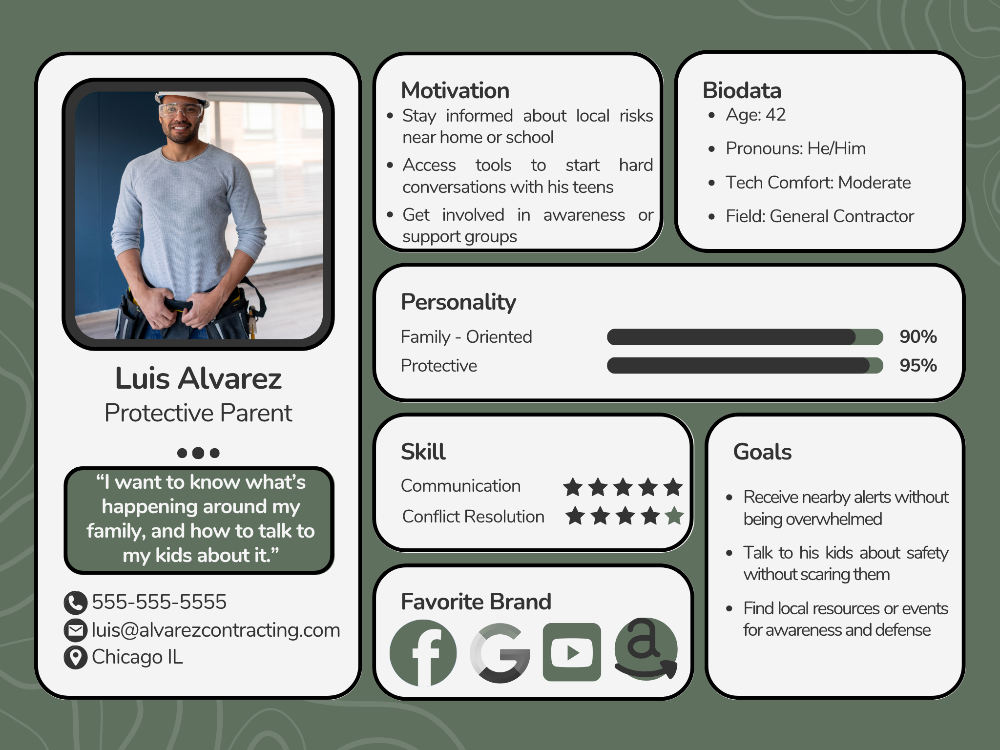
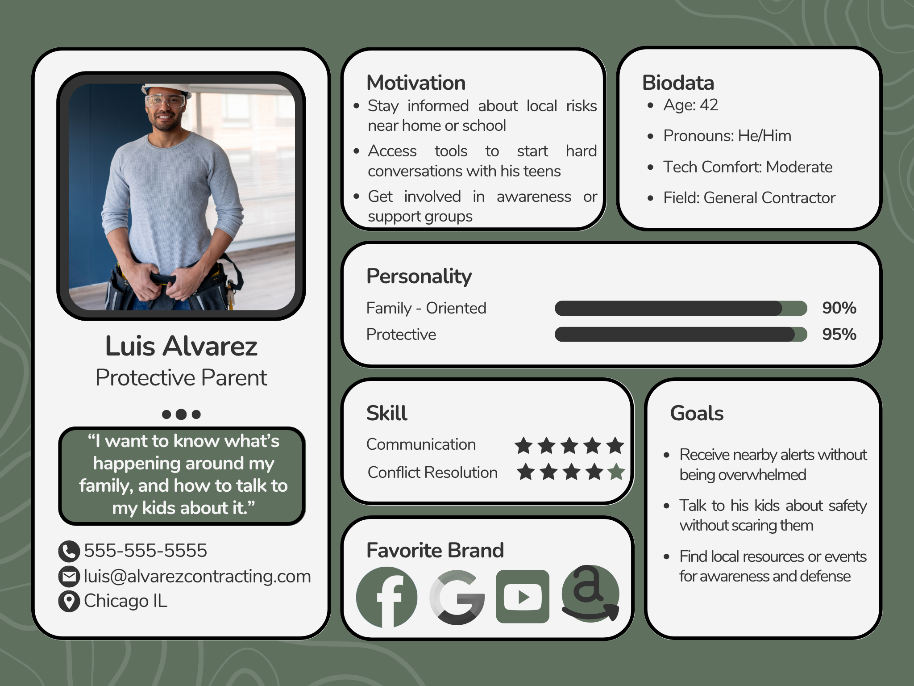

Project Overview
Humanity is an original mobile app concept designed to raise awareness around human trafficking and empower users to act safely. Built with a trauma-informed approach, it includes anonymous reporting tools, educational resources, and location-based safety features. This project is currently in active development and intended for real-world deployment.
- Figma
- UX Storyboarding
- Wireframing
Wireframes
Designed with accessibility and safety in mind, the wireframes prioritize mobile usability, anonymous flows, and clear calls to action.

Home

Map

Report

Course Detail
User Personas
Three distinct personas helped guide design choices: a college student, a protective parent, and a trauma-informed social worker. Each focused on different usage flows within the app—like learning, alerting, and reporting.
 


Next Steps
With research and wireframes complete, the next phase includes developing a visual style guide, building hi-fi prototypes in Figma, and refining the UX for portfolio presentation.